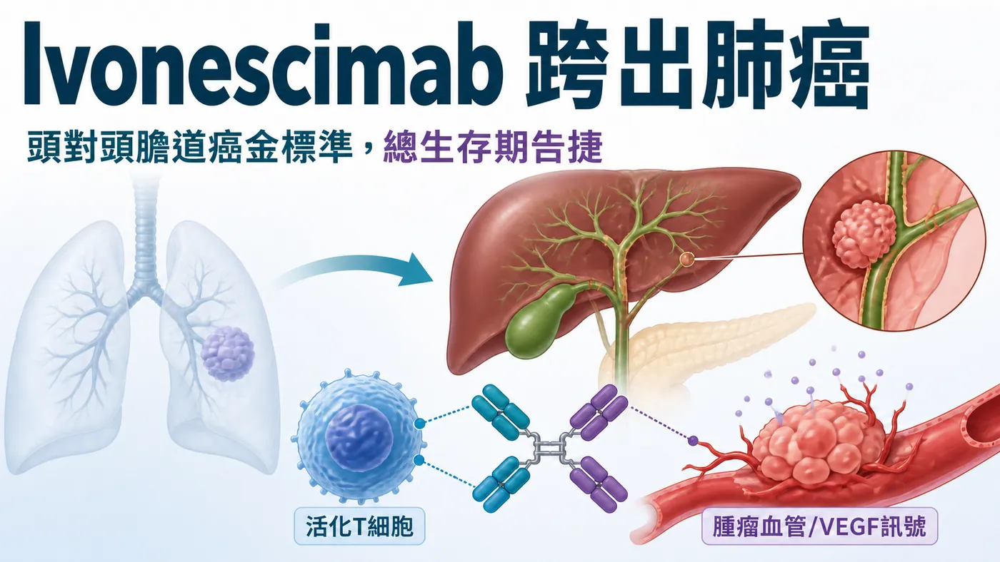
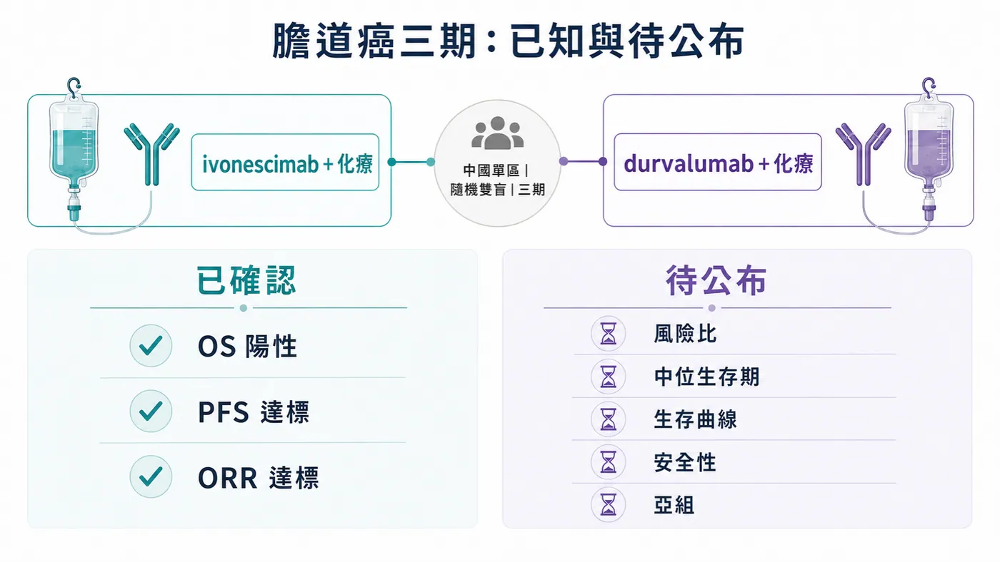
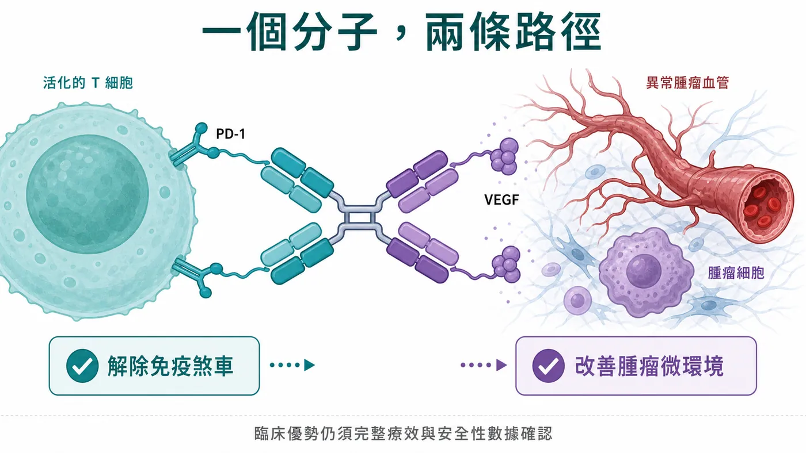
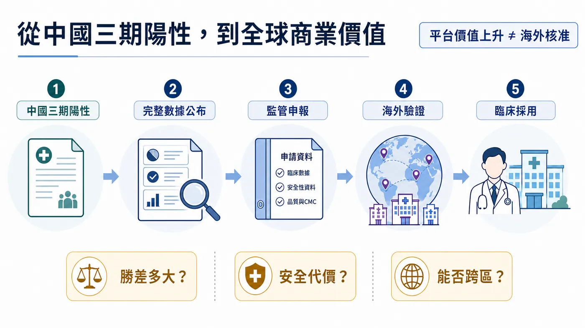

━━━━━━━━━━━━
分享這篇分析
把這篇文章轉給關注生技醫藥、公司研究或資本市場的朋友。
過去幾年，ivonescimab（依沃西）最響亮的標籤，是敢在肺癌正面挑戰 Keytruda。
現在，它第一次把戰線推到了肺癌之外。
2026 年 8 月 26 日，康方生物宣布，ivonescimab 合併化療，在一線晚期膽道癌三期 HARMONi-GI1 研究的預設期中分析中，達到總生存期主要終點。更關鍵的是，對照組並非安慰劑或單純化療，而是目前一線標準之一：durvalumab（度伐利尤單抗，商品名 Imfinzi）合併化療。
換句話說，新藥被直接推上世界級標準治療的擂台，眼前的欄杆一點也不低。
康方同時表示，無惡化生存期（PFS，疾病沒有惡化的時間）與客觀緩解率（ORR，腫瘤縮小達到標準的患者比例）也達到關鍵次要終點。ivonescimab 因此拿下第一個消化道腫瘤三期陽性結果，也第一次證明它的故事有機會從肺癌延伸到另一個癌種。
市場最想看的數字，卻還沒有出現。
公司目前沒有公布死亡風險降低多少、兩組中位總生存期相差多久、生存曲線何時分開，也沒有交代完整安全性與不同膽道癌亞型的結果。現階段可以確認的是「試驗成功」，還不能回答「成功得有多漂亮」。
這場勝利很重要；真正決定它能走多遠的比賽，才剛開始。

────────────────────
🩺 01｜膽道癌的難，不只在於病人少
膽道癌是一組從膽管、膽囊與相關部位長出的惡性腫瘤。它不像肺癌、乳癌那樣常被大眾談起，臨床上卻格外棘手：早期症狀不明顯，很多患者被發現時已無法手術；不同發生位置又帶來明顯的生物學差異，使同一套療法很難平均照顧所有患者。
過去很長一段時間，一線治療的骨架都是 gemcitabine（吉西他濱）加 cisplatin（順鉑）化療。免疫治療加入後，格局才開始鬆動。
阿斯特捷利康的 TOPAZ-1 三期研究顯示，durvalumab 合併化療，相較單純化療將死亡風險降低 20%，風險比（HR，用來比較兩組事件發生速度的指標）為 0.80。更長期追蹤仍維持生存優勢，這套療法也成為多國指南採用的一線標準。
默沙東的 KEYNOTE-966 三期研究則顯示，pembrolizumab（帕博利珠單抗，商品名 Keytruda）合併化療，死亡風險降低 17%，風險比為 0.83，中位總生存期為 12.7 個月，對照組為 10.9 個月。
這些結果改變了治療，但改善幅度仍留下很大空間。膽道癌的一線免疫治療已經有標準答案，臨床依舊在等一個能把生存曲線再往上推的方案。
ivonescimab 這次挑的，正是那個已經站穩位置的答案。
────────────────────
⚔️ 02｜這場「頭對頭」，到底比了什麼？
HARMONi-GI1，又稱 AK112-309，是一項在中國進行的單區、多中心、隨機、雙盲、註冊性三期試驗。受試者接受 ivonescimab 合併化療，或 durvalumab 合併化療，研究直接比較兩套方案作為一線晚期膽道癌治療的效果。
它的主要終點是總生存期（OS），也就是患者從進入研究到死亡的時間。對癌症治療而言，這是最難被包裝、也最有臨床分量的終點。
康方公布的是預設期中分析，資料由獨立資料監測委員會評估。結果顯示，ivonescimab 組在總生存期上取得具統計顯著性且有臨床意義的優勢；無惡化生存期與客觀緩解率也同步達標。
三個終點一起過關，讓這項結果比「腫瘤縮小得比較多」更有說服力。患者活得更久、疾病惡化得更慢、腫瘤縮小比例更高，三條線至少在方向上彼此呼應。
不過，頂線新聞稿只畫出了輪廓。
① 第一，總生存期的風險比尚未公布。0.80、0.70 或更低，代表的臨床與商業價值會明顯不同。
② 第二，中位總生存期尚未公布。統計顯著不等於每位患者都得到同樣幅度的延長，絕對差距仍要看實際月份。
③ 第三，生存曲線尚未公布。優勢是早早出現、持續拉開，還是在後段才形成，會影響醫師對療效穩定性的判斷。
④ 第四，完整安全性尚未公布。ivonescimab 同時作用於免疫與血管新生路徑，出血、高血壓、蛋白尿、免疫相關副作用及停藥比例，都要與對照組放在一起看。
⑤ 第五，亞組結果尚未公布。肝內膽管癌、肝外膽管癌與膽囊癌是否一致受益，將決定這套療法真正能覆蓋多大的患者範圍。
因此，今天最準確的說法是：ivonescimab 贏下了預設期中分析，而且對手很強；完整勝差仍待學術會議與同儕審查論文揭曉。

────────────────────
🧬 03｜為什麼一支雙抗，可能和兩支藥聯用不同？
ivonescimab 是一種同時鎖定 PD-1 與 VEGF 的四價雙特異性抗體。
PD-1 是 T 細胞表面的免疫煞車。癌細胞藉由相關訊號讓 T 細胞失去攻擊力；阻斷 PD-1，可以讓免疫系統重新辨認並攻擊腫瘤。
VEGF 是血管內皮生長因子。它會促進腫瘤血管形成，也會讓腫瘤微環境更缺氧、更混亂，進一步阻礙免疫細胞進入。抑制 VEGF，除了減少新生血管，也可能改善免疫細胞進入腫瘤的條件。
ivonescimab 把兩種功能放進同一個分子，並利用四個結合位點提高在同時富含 PD-1 與 VEGF 的腫瘤微環境中的結合力。設計目標很清楚：讓免疫解鎖與抗血管新生在同一處發生，提高腫瘤局部作用，同時降低正常組織不必要的暴露。
這套結構給了它與一般「免疫藥加抗血管藥」不同的藥理可能性。真正的臨床優勢仍須由數據決定。哪一種機制貢獻最多、是否換來更好的安全治療窗，都不能只靠示意圖下結論。
HARMONi-GI1 的價值，正是在最強對照面前讓這套機制第一次跨出肺癌，留下人體三期的陽性訊號。

────────────────────
🥊 04｜康方為什麼總愛挑最難的對手？
很多新藥會先對安慰劑或化療證明有效，再尋找與標準療法並排的位置。康方替 ivonescimab 選擇的是另一條路：直接和已被廣泛採用的免疫治療正面比較。
在 PD-L1 陽性的一線非小細胞肺癌，HARMONi-2 讓 ivonescimab 單藥對上 Keytruda；在一線鱗狀非小細胞肺癌，HARMONi-6 讓 ivonescimab 合併化療對上另一款 PD-1 抗體合併化療；到了膽道癌，對手換成 durvalumab 合併化療。
這種策略把風險與報酬同時放大。
一旦成功，產品不必再靠跨試驗比較拼湊故事，醫師、監管機構與支付方可以直接看到它和現行標準的差距。若結果只有些微波動，市場也會立刻放大每一個風險比、每一次資料更新與每一條生存曲線。
頭對頭研究因此是一種昂貴的自我約束：公司主動把最容易辯解的空間拿掉，讓產品價值接受同一批患者、同一個時間與同一套試驗規則的檢驗。
ivonescimab 已經在肺癌建立聲量。膽道癌的意義，是它第一次證明這種「挑最強對手」的打法，有機會在另一個腫瘤領域延續。
────────────────────
🧭 05｜從一款肺癌藥，走向一個泛癌種平台？
康方表示，ivonescimab 至今已有五項三期研究讀出陽性結果：四項來自非小細胞肺癌，HARMONi-GI1 則是第一項消化道腫瘤三期陽性。
這個數字改變了市場提問的方式。
當一款藥只在單一肺癌族群成功，投資人計算的是那個適應症能賣多少；當同一個分子在不同治療線別、不同對照與不同癌種中反覆出現陽性訊號，市場開始評估它能否形成平台，下一個癌種的成功機率是否應該被上調。
康方目前還在三陰性乳癌、頭頸癌、小細胞肺癌、結直腸癌與胰臟癌等領域推進研究。Summit 也在其授權區推進多項全球三期，包括肺癌與結直腸癌。
跨癌種外推仍有清楚邊界。膽道癌這項研究完全在中國進行，所有資料由康方產生、管理與分析；中國患者的陽性結果，不能自動替代美國、歐洲或其他地區所需的多區域臨床證據。不同癌種的免疫環境、治療骨架與患者組成也各不相同，一場成功無法替所有管線預先簽發通行證。
但它至少讓「ivonescimab 能否跨出肺癌」從假說往前走了一大步。
────────────────────
💰 06｜對康方、Summit 與阿斯特捷利康，分別意味著什麼？
ivonescimab 的全球權利被分成兩塊。Summit 擁有美國、加拿大、歐洲、日本、拉丁美洲、中東與非洲等地的權利；康方保留其餘市場。ivonescimab 目前只在中國獲批部分肺癌適應症，在 Summit 的授權區仍屬研究中療法。
對康方而言，膽道癌陽性增加的是產品在中國的適應症寬度，也提高整套雙抗平台的可信度。若完整數據夠強，下一步才會進入監管申報、醫保准入、醫師採用與商業放量的考驗。
對 Summit 而言，這份中國資料具有重要的「臨床去風險」價值：同一個分子在肺癌之外仍能打出總生存期優勢，平台估值有了新支點。然而 Summit 不能直接把中國單區結果變成歐美核准。海外開發路徑、監管要求與是否啟動膽道癌全球研究，仍是尚未完成的作業。
對阿斯特捷利康而言，這不是 Imfinzi 已經失去標準地位。durvalumab 合併化療擁有成熟三期、長期追蹤與多國核准；ivonescimab 目前只有頂線結果。待完整資料公布後，市場才有條件比較療效幅度、安全性、給藥與價格，判斷膽道癌的一線標準會不會真正改寫。

────────────────────
🏥 07｜如果完整數據夠強，臨床現場會怎麼變？
膽道癌患者真正需要的，不是一張漂亮的新聞稿，而是多一段有品質的生存時間。
一線治療通常是整條治療路徑的起點。患者第一次接受系統性治療時，體力、器官功能與承受副作用的能力往往相對完整；若能在這一段把疾病控制得更久，後續能否接受第二線治療、能否回到日常生活，都可能跟著改變。
因此，總生存期優勢只是第一道門。醫師還會問：患者需要多久來一次醫院？合併化療後的副作用能否管理？出血或血栓風險是否集中在特定族群？黃疸、膽道感染或肝功能異常的患者能否安全使用？療效提升會不會伴隨更多停藥？
支付方關心的問題又不同。durvalumab 與 Keytruda 已有成熟的採購、給付與治療經驗。新療法若要取代它們，除了延長生存，也要提出可被醫療體系承擔的價格、給藥與管理方案。
這正是「有統計差異」到「改變臨床標準」之間最容易被市場忽略的距離。藥物先在試驗裡贏，接著要讓醫師願意換、醫院能夠用、患者負擔得起，最後才會反映在真實世界市占率。
對康方來說，後半場考驗會從研發勇氣轉向商業執行。它需要把完整數據說清楚，把適合的患者找出來，也要證明產能與供應能跟上新增適應症。頭對頭勝利替產品打開門，卻不會自動把市場搬進來。
────────────────────
📊 08｜下一站，不是掌聲，而是五張成績單
ivonescimab 在膽道癌贏下一個有分量的終點，也替中國創新藥留下難得畫面：新療法不再只和化療比，而是直接挑戰全球已被驗證的免疫治療標準。
接下來，投資人與臨床醫師會共同盯著五張成績單：總生存期風險比、中位生存期、生存曲線、完整安全性，以及三種膽道癌亞型的結果。
若五張成績單彼此一致，ivonescimab 獲得的將超越新增一個適應症的機會。它會讓 PD-1／VEGF 雙抗從肺癌明星，開始接近泛癌種平台的定義；也會迫使下一代免疫腫瘤藥物回答一個更尖銳的問題：在已有 PD-1 或 PD-L1 標準療法的市場裡，新藥究竟能不能正面贏過它？
如果勝差不大，或安全性代價過高，這場頭對頭的光環也會迅速降溫。
所以此刻最值得記住的，並非「ivonescimab 已經改寫膽道癌」。
更準確的答案是：它第一次跨出肺癌，站上膽道癌金標準的對面，而且先拿到了總生存期這一分。
剩下的分數，等完整數據說話。
資料來源：康方生物 HARMONi-GI1 官方公告、Summit Therapeutics 官方公告與管線資料、TOPAZ-1、KEYNOTE-966、FDA 公開資料。
本文為醫藥產業資訊整理，不構成醫療建議或投資建議。治療選擇請諮詢專業醫療人員。
資料來源
- 康方生物｜HARMONi-GI1 達到總生存期主要終點
- Summit Therapeutics｜HARMONi-GI1 頂線結果與單區研究邊界
- TOPAZ-1｜Durvalumab 合併化療主要分析
- TOPAZ-1｜更新整體生存分析
- FDA｜Pembrolizumab 合併化療用於膽道癌
引用本文
若在簡報、報告或社群討論引用，建議附上 Drugnews 原文連結。
Drugnews 編輯部，〈Ivonescimab 跨出肺癌！正面挑戰膽道癌金標準，總生存期告捷〉，Drugnews｜藥時事，2026/09/04，https://drugnews.com.tw/articles/2026-09-04-ivonescimab-biliary-tract-cancer-harmoni-gi1.html